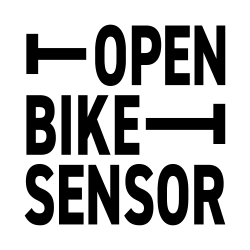

Visualisierung: Messwerte
Bitte einen Messpunkt in der Karte (farbige Kreise) anklicken um detailierte Informationen zu erhalten.
Kartenlegende
Ring um Messung:
außerorts, innerorts, unbekannt
Fläche innerhalb kodiert den Überholabstand:
Überholabstand außerorts
Überholabstand innerorts